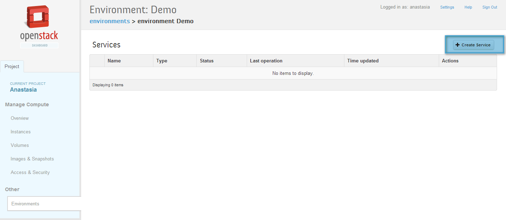
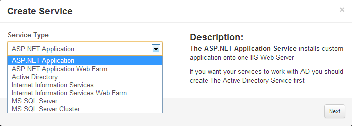
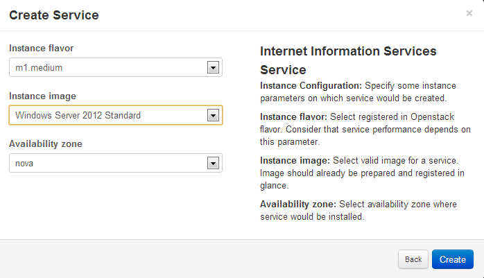

All services should be created in the context of Environment - virtual Windows Data Center. After Environment is created services prototypes and then deploy the Environment. When deploy process is done instances with your services will be spawned in Openstack. To create a service prototype navigate to environment services by clicking on the environment name (or on the "Services" button) and click the "Create Service" button.
|  |
You have an opportunity to create one of the following services:
|  |
Once you choose service that you want to create click "Next" and fill the form. Forms for each service are specific. To see more information about filling the form for a specific service follow one of the link below:
Active Directory: Active Directory is a directory service implemented by Microsoft for Windows domain networks. In one installation, in addition to primary Domain Controller, you can add optional count of secondary Domain Controllers. Any other services you are intending to create can be joined to that domain.
Internet Information Service: IIS is a web server and a set of feature extension modules.
Internet Information Web Farm Service: Murano installs the Web Farm Framework on the controller server, configures the primary server and prepares the secondary servers. In addition load balancer is installed to monitor service statuses.
ASP.NET Service: is a server-side Web application framework designed for Web development to produce dynamic Web pages. Service is able to install custom application onto one IIS Web Server. Murano installs all needed components and make proper configuration.
ASP.NET Farm Service: ASP.NET Farm Service installs a custom application on a load-balanced array of IIS servers
MS SQL Service: Microsoft SQL Service is a relational database management system.
SQL Server Failover Cluster: Murano installs all needed components and configures your SQL Server Cluster the way you want.
On the last step of creating service prototype you have opportunity to set the hardware flavor of the instance which will be created - and the image with the operating system, which will be installed on the instance. Also you may select availability zone, if there are more then one in your environment.
|  |